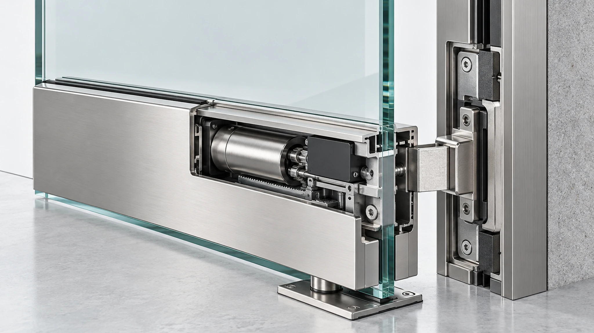
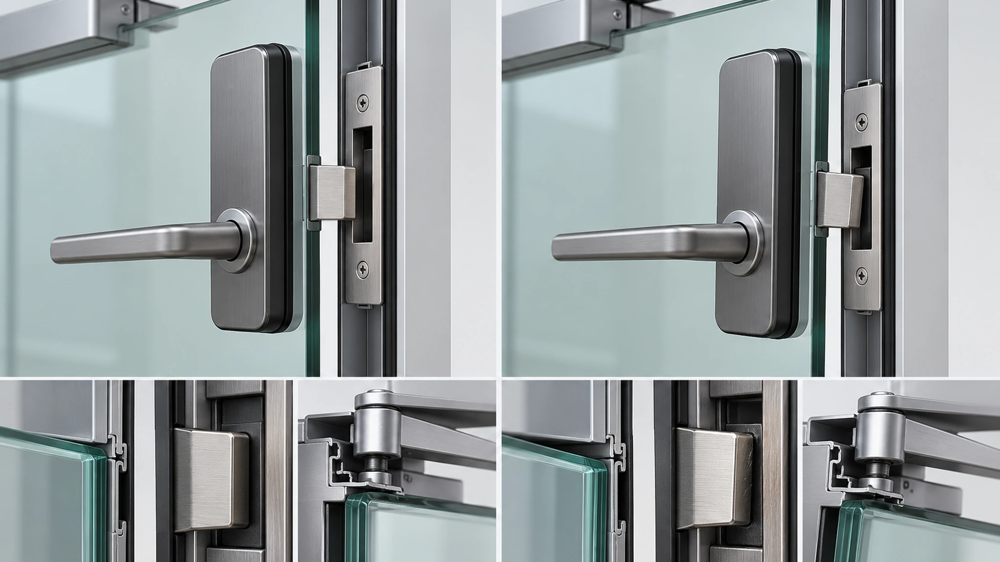
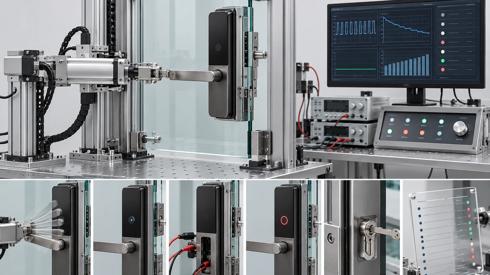

Este artigo apoia a compra e o planeamento do projeto. Não confirma compatibilidade universal nem um SKU WAFU padrão para fechaduras eletrónicas de portas de vidro.
A porta de vidro é apenas uma parte do sistema de fecho de uma fechadura inteligente. A configuração da porta, ferragens, interfaces de montagem, comportamento de fecho, alimentação e responsabilidade pelo acesso de emergência determinam se uma solução pode avançar para validação da amostra.
1. Definir o limite da decisão antes de escolher o modelo
A primeira decisão não é qual modelo encomendar. É saber se o projeto tem uma interface documentada que possa ser avaliada. A expressão “porta de vidro” não identifica as peças que suportam carga, as superfícies de montagem, o sentido de fecho ou a relação entre trinco e batente. Também não define quem é responsável pelo trabalho elétrico e pelo acesso de emergência.
Trate a fechadura proposta como uma plataforma candidata até que a equipa reveja os dados da porta e das ferragens. WF-010, WF-019 ou WF-026 podem ser candidatos quando o uso, o espaço de instalação e o método de acesso justificarem uma análise mais próxima. Isto não confirma a compatibilidade. A decisão final deve seguir os desenhos, as ferragens do projeto, a instalação da amostra e os critérios de aceitação acordados.
O limite da avaliação deve esclarecer as responsabilidades do fornecedor da porta e das ferragens de vidro, do instalador, do fornecedor de controlo de acesso ou fechadura, do eletricista e do operador. Se uma interface continuar indefinida, é possível preparar uma cotação, mas condicionada à informação em falta e à revisão da amostra.

2. Registar a configuração da porta, não apenas o material
Antes de discutir a montagem, registe a configuração real da porta. A distinção principal normalmente não é vidro contra não vidro, mas a forma como a folha móvel fecha e a estrutura estável que existe no lado do batente.
Uma folha sem aro pode usar ferragens de vidro e fechar contra um painel fixo, um batente montado na parede ou um aro separado. Uma folha de vidro com aro pode oferecer outras opções de montagem e encaminhamento de cabos, mas o material do aro, a geometria do perfil e as ferragens continuam a precisar de revisão. As portas de duas folhas introduzem uma condição de encontro central e de folha passiva que pode alterar a interface do batente. Sistemas pivotantes, de abrir, de correr ou com requisitos especiais têm restrições próprias.
Recolha pelo menos fotografias frontal, traseira e de bordo; desenhos da porta e das ferragens quando existirem; sentido de abertura; fotografias claras do lado de fecho; e as ferragens atuais. Registe se o projeto espera abertura remota, acesso por credencial, controlo local ou uma combinação. Assim o fornecedor avalia uma condição concreta.
3. Avaliar a interface de montagem e o batente como um sistema
O corpo da fechadura, o suporte ou grampo, a folha móvel, o batente e o apoio fixo devem ser avaliados como uma relação mecânica única. Observar apenas o corpo da fechadura deixa sem resposta a pergunta principal: para onde vai a força de fecho e o que mantém a relação depois de utilizações repetidas?
A revisão deve identificar as superfícies estruturais de montagem, o espaço em torno de puxadores e ferragens, o apoio do lado do batente, o acesso para cabos e manutenção da bateria e a possibilidade de manter as ferragens existentes. Também deve indicar qualquer perfuração, aperto ou adaptador previsto no vidro ou na estrutura adjacente. Estes trabalhos devem ser verificados contra os requisitos do projeto e do fornecedor do vidro.
Quando uma plataforma parece promissora, peça um conceito de instalação que mostre suporte, corpo e batente na geometria real da porta. O conceito deve ser verificado antes da encomenda de produção e reproduzido na amostra. Separe as dimensões confirmadas das medições ainda pendentes.
4. Definir alimentação e acesso de emergência antes da instalação
A alimentação e o acesso de emergência são decisões operacionais, não detalhes para o fim da instalação. O projeto deve definir quem monitoriza a energia, quem substitui ou mantém a fonte, o que acontece quando o funcionamento normal não está disponível e que pessoas estão autorizadas a usar um caminho de emergência.
Comece pelo método de acesso e pelas responsabilidades operacionais. Bateria, alimentação com fios, libertação controlada ou solução mista têm dependências de instalação e manutenção diferentes. A avaliação deve localizar a interface de alimentação, o acesso de serviço, a transição de cabos e a forma de abrir o invólucro, sem afirmar autonomia ou desempenho elétrico antes de testar a configuração final.
O acesso de emergência também precisa de uma regra escrita do projeto. O caminho correto depende do edifício, do uso, dos requisitos locais e das ferragens mantidas. Pode envolver um procedimento mecânico, uma alimentação ou libertação autorizada, uma credencial gerida ou uma resposta específica do local. A amostra deve demonstrar o caminho acordado com as partes responsáveis.

5. Validar o alinhamento durante todo o ciclo de fecho
O alinhamento estático na posição totalmente fechada não é suficiente. A amostra deve ser observada durante a aproximação, o primeiro contacto, o fecho final, o engate, a libertação e a reabertura. Abaixamento da folha, força do fecha-portas, resistência da vedação, uso do puxador, estado do piso e ajuste das ferragens podem alterar a relação entre fechadura e batente.
A equipa deve concordar sobre o que observar: a folha chega sempre à posição fechada prevista; a relação com o batente permanece estável; existe fricção, impacto ou bloqueio; o método de acesso funciona após ciclos repetidos; a instalação continua segura e fácil de manter? São observações da amostra real, não garantias universais.
Quando o uso é intenso ou as condições de fecho variam, repita a validação depois de ajustar as ferragens ao estado previsto do projeto. Se o alinhamento depender de calços temporários, pressão manual ou de o instalador segurar a folha, a interface ainda não foi validada.

6. Usar a amostra para transformar pressupostos em observações
O teste da amostra substitui pressupostos por evidências observáveis. Deve incluir a configuração de porta pretendida ou um modelo demonstrado como equivalente, a interface de montagem, o método de acesso escolhido e o procedimento de serviço ou emergência acordado. Um único desbloqueio bem-sucedido não valida o projeto.
Use um registo simples com componentes da amostra, data de configuração, estado da porta, participantes, observações e ações em aberto.
| Tema de validação | O que a equipa deve observar |
|---|---|
| Porta e ferragens | Superfícies de montagem, espaço livre, apoio do lado do batente, acesso de serviço e adaptador ou grampo previsto |
| Fecho e engate | Fecho repetível, relação com o batente, ausência de fricção ou bloqueio inaceitável e engate estável |
| Acesso normal | Método de acesso escolhido, comportamento da autorização e sequência de utilização |
| Alimentação e serviço | Acesso para manutenção, procedimento de baixa energia e responsabilidade pelas verificações de rotina |
| Acesso de emergência | Procedimento autorizado, responsáveis e condições de utilização |
| Controlo da entrega | Lista de componentes, configuração, notas de instalação, riscos pendentes e responsabilidade de aprovação |
O relatório da amostra não deve transformar observações em garantias sem suporte. Deve registar o que foi testado, em que configuração, o que passou, o que requer alteração e o que deve ser reconfirmado antes da produção ou instalação no local.

7. Preparar um pacote RFQ que possa ser analisado
Uma RFQ é mais fácil de avaliar quando separa os factos conhecidos das questões em aberto. Anexe a informação da porta e indique o que a fechadura deve fazer. Não peça ao fornecedor para inferir toda a instalação a partir de uma fotografia geral ou de um nome de modelo.
- Configuração da porta, sentido de abertura, desenhos disponíveis da porta e das ferragens e fotografias claras da frente, traseira, borda e lado de fecho.
- Local e utilização do projeto, incluindo eventuais regras locais, gestão do edifício ou requisitos para portas especiais.
- Métodos de acesso esperados e requisitos de controlo de acesso, credenciais, libertação remota ou gestão pelo operador.
- Estrutura fixa disponível para batente ou suporte e limites para perfuração, aperto ou modificação.
- Expectativas de alimentação, responsabilidade de manutenção e procedimento de emergência exigido pelo projeto.
- Quantidade, calendário da amostra, mercado-alvo, embalagem ou rotulagem e responsável pela aprovação final da instalação.
- Documentos, registos de inspeção, controlo de alterações e materiais de entrega necessários.
Isto não elimina a necessidade da amostra, mas dá ao projeto e ao fornecedor uma base comum para definir o seu âmbito.
8. Conclusão
Um projeto de fechadura inteligente para porta de vidro deve começar pelo sistema de fecho, não por um modelo de catálogo. É necessária uma configuração documentada, uma interface de montagem e batente confirmada, responsabilidades claras para alimentação e emergência e uma amostra que demonstre o comportamento de fecho e acesso.
WF-010, WF-019 e WF-026 só devem ser discutidos como plataformas candidatas depois de analisar desenhos, ferragens e requisitos do projeto. Para uma avaliação inicial, envie os dados da porta, o método de acesso e os requisitos operacionais, seguindo-se a revisão dos desenhos, a instalação da amostra e a validação documentada.
Solicitar avaliação de projeto para porta de vidro
Envie desenhos ou fotografias da porta, sentido de abertura, estado das ferragens, quantidade prevista, requisitos de acesso, expectativas de alimentação e procedimento de emergência. A WAFU poderá definir a revisão dos desenhos e a validação da amostra.
Este artigo apoia a compra e o planeamento do projeto. Não confirma compatibilidade universal nem um SKU WAFU padrão para fechaduras eletrónicas de portas de vidro.